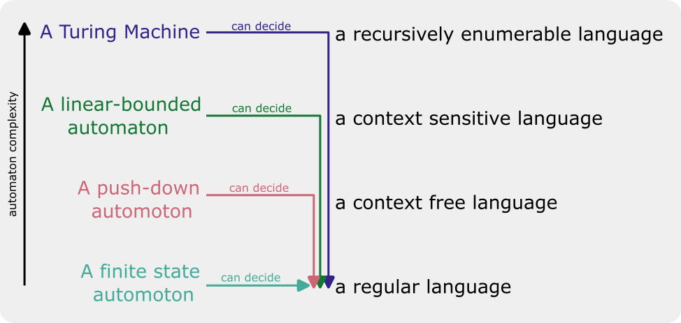

stateDiagram direction LR state "Off" as off state "On üí°" as on [*] --> off on --> off: switch flip off --> on: switch flip
Regular Languages and Finite State Machines
compling
Where we’re going:
In another class, we might just jump straight into learning about “Regular Expressions”, which are very useful tools for searching for patterns in text.
But since this is Computational Linguistics, we should probably learn about what is “regular” about “regular” expressions, because it’s related to formal language theory!
“Formal Language Theory” and “Abstract Machines”
- Formal Languages are systems of rules (i.e. a formal “grammar”) for combining a set of strictly defined symbols.
A small formal language
\(\mathcal{L}\) is the language, which is a set that contains all, and only, the possible strings of \(\mathcal{L}\).
\(\Sigma\) is the vocabulary of \(\mathcal{L}\).
- \(\Sigma = \{a,b\}\)
\(\mathcal{N}\) Are the “non-terminal nodes” of \(\mathcal{L}\), of which we have 3.
- \(\mathcal{N} = \{S, A, B\}\)
\(\mathcal{G}\) is the grammar of \(\mathcal{L}\). It contains 4 rules
\(S \rightarrow aA\)
\(A \rightarrow aB\)
\(A \rightarrow aA\)
\(B \rightarrow b\)
With the sets \(\mathcal{N}\), \(\mathcal{\Sigma}\), and \(\mathcal{G}\), can we figure out which strings are, or are not in \(\mathcal{L}\)?
- “Automata” and other abstract machines are ways of conceptualizing the possible or necessary computational operations and resources needed for different tasks, like identifying whether or not a string is in a language!
We’ll start with the least complex1 machines, “Finite State Automata”
Finite State Automata
- Finite
-
Having a fixed, or non infinite amount of things
- State
-
The current state, or status, of a system.
- Automaton
-
A machine
FSAs have
a fixed number of states
a fixed number of inputs they can accept
rules about how to change their state given an input.
Examples
A light switch.
- States
-
On, Off
- Inputs
-
switch flip
A metro turnstile
stateDiagram direction LR state "Locked" as l state "Unlocked" as u [*] --> l l --> l: push l --> u: coin u --> u: coin u --> l: push
- states
-
Locked, Unlocked
- inputs
-
coin, push
A Github Repo!
stateDiagram state "Local Synced with Remote" as s state "Unstaged Changes" as us state "All changes staged" as st state "No uncommitted changes" as com [*] --> s s --> us: Editing & Saving us --> us: Editing & Saving us --> st: Staging all changes st --> us: Editing & Saving st --> com: Committing com --> us: Editing & Saving com --> s: Push
- states
-
Local Synced with Remote, Unstaged Changes, All Changes Staged, No Uncommitted Changes
- inputs
-
Editing & Saving, Staging all Changes, Committing, Push
The Batman Theme Song
Batman!
Na na na na na na na na na na na na
Batman!
Na na na na na na na na na na na na
Batman!
Na na na na na na na na na na na na
Batman!
Na na na na na na na na na na na na
Batman!
Na na na na na na na na na na na na
Batman! Batman! Batman!
Na na na na na na na na na na na na
Batman!
stateDiagram direction LR [*] --> a: Na a --> b: na b --> c: na c --> d: na d --> e: na e --> f: na f --> g: na g --> h: na h --> i: na i --> j: na j --> k: na k --> l: na l --> batman1: Batman! batman1 --> a: Na batman1 --> batman2: Batman! batman2 --> batman3: Batman! batman3 --> a: Na batman1 --> [*]: ε
- States
-
a-l, batman1, batman2, batman3
- Inputs
-
Na, na, Batman!
Automata and Formal Grammars
If you have
- some formal Grammar \(\mathcal{G}\)
that you use to generate
- the strings of language \(\mathcal{L}\)
There is some Automaton (maybe not a finite state automaton!) that can decide whether nor not a string is in \(\mathcal{L}\) or not.
This relationship between automata of various complexity and formal grammars/languages is called the “Chomsky Hierarchy.”

Returning to our small formal language
Here’s the grammar rules we had for our grammar
\(\mathcal{G}\) is the grammar of \(\mathcal{L}\). It contains 4 rules
\(S \rightarrow aA\)
\(A \rightarrow aB\)
\(A \rightarrow aA\)
\(B \rightarrow b\)
Using the grammar to generate a string
We can build up a string by choosing rules and applying them
Start
flowchart TD S
- \(S\rightarrow aA\)
flowchart TD S --> a1["a"] S --> A1["A"]
- \(A \rightarrow aA\)
flowchart TD S --> a1["a"] S --> A1["A"] A1 --> a2["a"] A1 --> A3["A"]
- \(A \rightarrow aB\)
flowchart TD S --> a1["a"] S --> A1["A"] A1 --> a2["a"] A1 --> A2["A"] A2 --> a3["a"] A2 --> B
- \(B \rightarrow b\)
flowchart TD S --> a1["a"] S --> A1["A"] A1 --> a2["a"] A1 --> A2["A"] A2 --> a3["a"] A2 --> B B --> b
Result: \(aaab\)
Defining a FSA to recognize the language
stateDiagram direction LR [*]-->p p --> q: a q --> q: a q --> [*]: b
If we take strings, generated by \(\mathcal{G}\) and feed them to this FSA one-by-one, we should arrive at the “accepting” state without any symbols left over.
If we take a string, generated by some unknown grammar, pass it through this FSA, and arrive at the “accepting” state without any symbols left over, then it could have been generated by \(\mathcal{G}\).
If we take a string, and pass it through this FSA, and either never get to the accepting state, or have symbols left over, then it couldn’t have been generated by \(\mathcal{G}\), and isn’t in \(\mathcal{L}\).
What does this have to do with “Regular Expressions?”
“Regular Expressions” are a concise, computery way to define finite state automata that take text as input strings and return matches. That is, regular expressions can identify strings that belong to “regular” languages.
We’ll talk about details later, but if I wasn’t sure of someone was using British spelling or American spelling, I could write a RegEx to match either color or colour.
colou?r
stateDiagram direction LR [*] --> 1 1 --> 2: c 2 --> 3: o 3 --> 4: l 4 --> 5: o 5 --> 6: u 5 --> [*]: r 6 --> [*]: r
Limitations of RegEx
Because Regular Expressions define a finite state automaton, and FSAs can only successfully recognize regular languages, that means you can’t use Regular Expressions (reliably) to recognize any more complex language.
For example, HTML pages use “tags” to define where text elements begin and end. In this code snippet, the opening <p> tag says a paragraph is beginning, and the closing </p> says the paragraph is ending. The opening <strong> tag says the text is turning bold, and the closing </strong> tag says the text is turning regular again.
html
<p>
This is a paragraph with
<strong>
bold text
</strong>
.
</p>For an html page to be valid, every opening tag,
<tag>needs to have a matching closing tag</tag>.You can’t have a closing tag
</tag>without a preceding opening<tag>.You you can embed another opening and closing tag set within another opening and closing tag set.
This kind of long distance “bracket matching”, where you can have intervening brackets, requires at least a push-down automaton to recognize.
That means html is a context-sensitive language.
Some further reading
Jäger and Rogers (2012)
References
Jäger, Gerhard, and James Rogers. 2012. “Formal Language Theory: Refining the Chomsky Hierarchy.” Philosophical Transactions of the Royal Society B: Biological Sciences 367 (1598): 1956–70. https://doi.org/10.1098/rstb.2012.0077.
Footnotes
Complex in the sense of what they can do, not necessarily how easy it is to understand them.↩︎
Reuse
CC-BY-SA 4.0
Citation
BibTeX citation:
@online{fruehwald2024,
author = {Fruehwald, Josef},
title = {Regular {Languages} and {Finite} {State} {Machines}},
date = {2024-01-16},
url = {https://lin511-2024.github.io/notes/meetings/01_fsm.html},
langid = {en}
}
For attribution, please cite this work as:
Fruehwald, Josef. 2024. “Regular Languages and Finite State
Machines.” January 16, 2024. https://lin511-2024.github.io/notes/meetings/01_fsm.html.